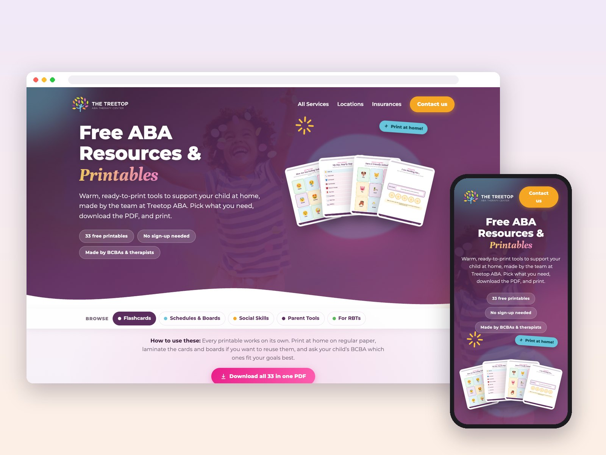

02.
Short-Form Social Videos
education | humor | engagementTwo sites that keep the feed going
Content Crew turns staff into creators, and Parent Resources gives every post somewhere useful to send families. I owned the visual design, the copy and the front-end build on both.
Content Crew
Creator program for staffA creator program that recruits staff to make social videos, turning employees into brand advocates with a clear incentive structure.
View Page
Parent Resources
Printables library for familiesA free ABA resources library with 33 ready-to-print, therapist-made printables and no sign-up required.
View Page